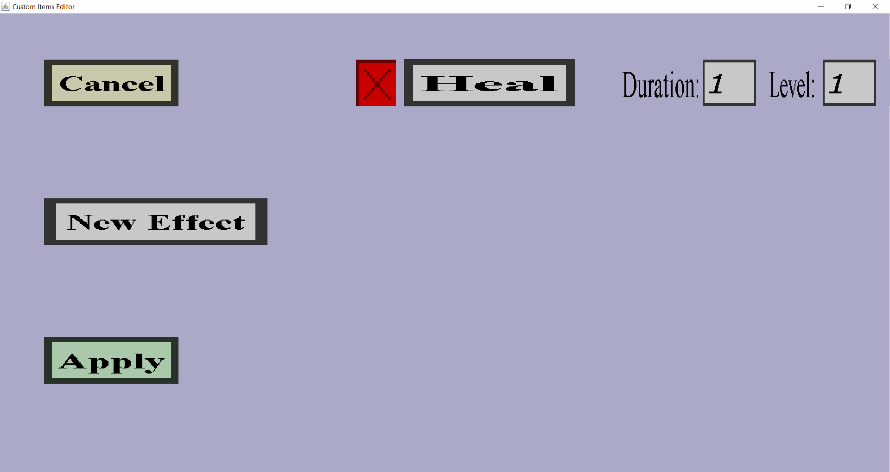

The potion effect overview is a menu where you can view and modify a list of potion effects.
If you currently have a single potion effect with the heal effect type, a duration of 1 tick and level 1,
it should look like this:

On the left are the 'Cancel', 'New Effect' and 'Apply' buttons.
Additionally, there is a red cross, effect type button, duration edit field and level edit field
for each potion effect currently in the list.
-
The 'Cancel' button will bring you back to the item edit menu you came from, without
keeping any changes you made in this menu.
-
The 'New Effect' button will add a new potion effect to the list and add its corresponding
buttons and edit fields.
-
The 'Apply' button will bring you back to the item edit menu you came from and keep
all changes you made in this menu.
-
The red cross on the left of every potion effect row will remove the corresponding potion effect
from the list as well as its corresponding buttons and edit fields.
-
The effect type button (only the 'Heal' button in the screenshot above) allows you to change
the potion effect type of its corresponding potion effect. The text on the button is the
currently chosen potion effect type (or the default one if you haven't changed it yet).
Clicking it will bring you to menu where you can either click on 'Cancel' or on a potion
effect type. Clicking on 'Cancel' will bring you back to this potion effect overview without
changing the potion effect type. Clicking on any potion effect type will change the potion effect
type of the corresponding potion effect to the type whose button you clicked. Note that this menu
uses the Bukkit potion effect type names rather than the minecraft names you are probably used to.
This is because it's easier to work with for this plugin (and other plugins).
-
The Duration edit field allows you to change the duration of its corresponding option effect
in seconds. The duration must be a positive integer.
-
The Level edit field allows you to change the level of its corresponding potion effect.
The level must be a positive integer.